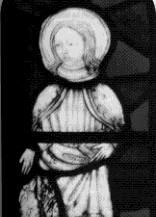
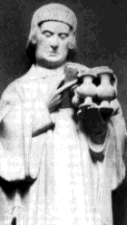

Welcome again to the column dedicated to the strangely departed among our Catholic sisters and brethren. This is an exciting week in the calendar of feasts for the Catholic church. Not only was St. Paul's historic conversion this week (Jan 26), but we celebrate days for St. Francis de Sales (Jan 24 (he fought the Calvinists who were taking advantage of the advancement of literacy by passing out bibles(translated into french) to the local peasants. This sacrilege was strictly forbidden by the Vatican which forbade the printing of God's word in any language except Latin. This of course was the simplest solution for the church to keep the peasants from being able to actually interpret the sacred and possibly dangerous texts for themselves, thus effectively keeping the pews and coffers of the church full)), St. Dwyn (Jan 25 (founded a convent in Wales that holds a spring whose waters can cure sick animals)), St. Titus (Jan 26 (patron saint invoked against freethinkers and one of the few early converts of the church who was able to bypass the ever fun ritual of adult circumcision)), and St. Angela Merici (Jan 27 (For all of those lucky enough to have attended Catholic school, this is the Saint you have to thank for starting it all)). Well enough with the non-martyrs...let's see some blood!
The Martyr of the Week for Jan 21-27 is St. Agnes (Jan 21),the Patroness of virgins and Girl Scouts (not necessarily that the two go together, I mean, the things people will do to sell cookies...). St. Agnes was another in the long line of Roman maiden martyrs. She, like so many others, spurned the advances of Roman suitors only to be reported to the authorities as one of those crazy Christians. When she refused to marry the local governor's son, he ordered our chaste Saint to be stripped naked and led through the streets to a brothel. This was to no avail because as soon as Agnes was stripped of clothing her hair grew profusely and concealed her "shame". Once in the brothel an angel appeared and clothed Agnes in a glowing white robe. The only person brave (or stupid) enough to approach her was the Governor's son and he was immediately struck blind (or dead...accounts differ). Being that Agnes was so kind (not to mention naive, she was only 13 at the time) she cured him. For this act she was charged with witchcraft and was sentenced to be burned, stabbed or beheaded (again, accounts differ). Legend has it that if a girl fasts for 24 hours and then eats an egg with salt on it just before bedtime on the eve of St. Agnes' feast day, she will dream of her future husband.
Other martyrs of note this week include St.Vincent of Saragossa (Jan 22 (brought before the Roman governor of Spain with the Bishop Valerius, young Vincent was able to convince the Magnate that he was perfectly willing to die for his faith. Never one to pass up an opportunity, the governor laid out a series of tortures for our Saint including being stretched on the rack, torn with hooks, being pushed on a bed of iron spikes placed over a fire, having salt rubbed in his wounds, rolled in broken pottery, and locked in a cell and left to starve. For all of this trouble Vincent is venerated by vintners and vinegar makers simply because his name starts with V-I-N), St. Emerentiana (Jan 23 (was stoned at the tomb of St Agnes (above) by an angry mob)), and St. Timothy (Jan 26 (was beaten to death by a band of merry-making pagan rabblerousers who were celebrating the feast of the goddess Diana). Until next week, suck it in and then spit it out (I do).
|

St Agnes

St. Vincent
|